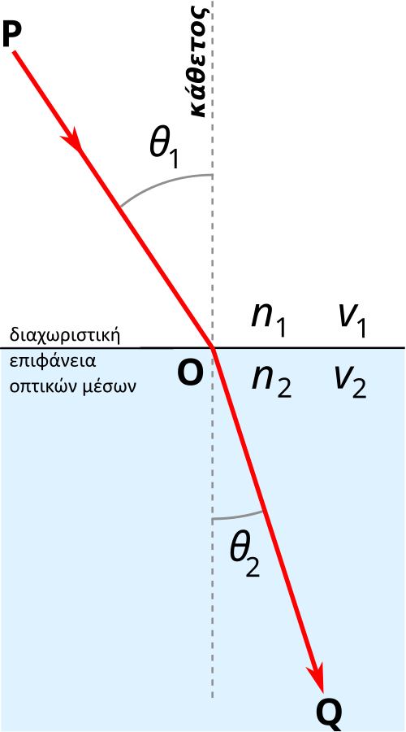

R-8 : Dielectrics (Glass)
Implementing glass and transparent materials using Snell's law of refraction and the Schlick approximation for realistic reflectance at grazing angles.
Part 8: Dielectrics
Dielectric materials, like glass and water, both reflect and refract light. When a ray hits the surface we randomly pick one behaviour, over many samples the average produces the correct result.
Snell's Law
Refraction is described by Snell's Law : η · sin(θ) = η′ · sin(θ′) where η and η′ are the refractive indices of the two media.

We split the refracted ray into its perpendicular and parallel components relative to the surface normal :
R′⊥ = (η/η′)(R + cos(θ) · n)
R′∥ = −√(1 − |R′⊥|²) · n
Add the Refract helper to Vector3.h :
Vector3.h
inline Vector3 Refract(const Vector3& uv, const Vector3& n, double etaOverEtaPrime)
{
double cosTheta = fmin(Dot(-uv, n), 1.0);
Vector3 rOutPerp = etaOverEtaPrime * (uv + cosTheta * n);
Vector3 rOutParallel = -sqrt(fabs(1.0 - rOutPerp.SquaredLength())) * n;
return rOutPerp + rOutParallel;
}Total Internal Reflection
When a ray travels from a denser medium to a less dense one at a steep angle, refraction is impossible, the ray reflects entirely. We detect this when sin(θ′) > 1 and fall back to reflection :
Material.h
class Dielectric : public Material
{
private:
double mRefractionIndex; // η for this material (e.g. 1.5 for glass)
static double Reflectance(double cosine, double refractionIndex)
{
// Schlick's approximation for reflectance
double r0 = (1 - refractionIndex) / (1 + refractionIndex);
r0 = r0 * r0;
return r0 + (1 - r0) * pow((1 - cosine), 5);
}
public:
Dielectric(double refractionIndex) : mRefractionIndex(refractionIndex){}
bool Scatter(
const Ray& rRayIn, const HitInfo& rHitInfo,
Color& attenuation, Ray& rScattered
) const override
{
attenuation = Color(1.0, 1.0, 1.0); // glass absorbs nothing
// Air → material or material → air depending on face direction
double ri = rHitInfo.frontFace ? (1.0 / mRefractionIndex) : mRefractionIndex;
Vector3 unitDirection = Unit(rRayIn.GetDirection());
double cosTheta = fmin(Dot(-unitDirection, rHitInfo.normal), 1.0);
double sinTheta = sqrt(1.0 - cosTheta * cosTheta);
bool cannotRefract = ri * sinTheta > 1.0;
Vector3 direction;
if (cannotRefract || Reflectance(cosTheta, ri) > RandomDouble())
direction = Reflect(unitDirection, rHitInfo.normal);
else
direction = Refract(unitDirection, rHitInfo.normal, ri);
rScattered = Ray(rHitInfo.coordinates, direction);
return true;
}
};The Schlick approximation makes glass reflectance increase at grazing angles, a cheap but very convincing approximation of the full Fresnel equations.
Scene Setup
A hollow glass sphere is made by placing a negative-radius sphere inside a positive one :
Raytracing.cpp
int main()
{
// Materials
auto matGround = make_shared<Lambertian>(Color(0.8, 0.8, 0.0));
auto matCenter = make_shared<Lambertian>(Color(0.1, 0.2, 0.5));
auto matLeft = make_shared<Dielectric>(1.50); // glass
auto matBubble = make_shared<Dielectric>(1.00 / 1.50); // air inside glass
auto matRight = make_shared<Metal>(Color(0.8, 0.6, 0.2), 1.0);
// World
HittableCollection world;
world.Add(make_shared<Sphere>(Position( 0.0, -100.5, -1.0), 100.0, matGround));
world.Add(make_shared<Sphere>(Position( 0.0, 0.0, -1.2), 0.5, matCenter));
world.Add(make_shared<Sphere>(Position(-1.0, 0.0, -1.0), 0.5, matLeft));
world.Add(make_shared<Sphere>(Position(-1.0, 0.0, -1.0), 0.4, matBubble)); // hollow interior
world.Add(make_shared<Sphere>(Position( 1.0, 0.0, -1.0), 0.5, matRight));
// Render
Camera camera(400, 16.0/9.0, 100, 50);
camera.Render(world);
return 0;
}Three material types down. One more post to go to finish Book 1: the positionable camera!